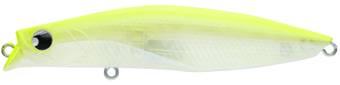
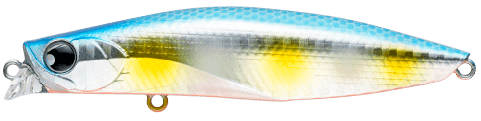
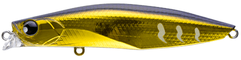
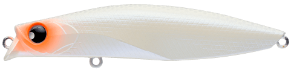

ウィリップ87F
（WILIP87F）
ウィリップ87FはPOP SEA CREW（ポップシークルー）のフローティングミノーです。
特徴的なリップ形状で、デッドスロー〜スローはロール寄りの滑らかなウォブンロール、ハイスピードでは手元に伝わる強めのウォブリングに変化。1つのルアーで、まったく別の2通りの見せ方ができます。

画像出典:POP SEA CREW公式HP
スペック
- メーカー
- POP SEA CREW（ポップシークルー）
- タイプ
- フローティングミノー
- 全長
- 87mm
- 自重
- 13g
- レンジ
- 5〜40cm
- フック
- #5
- リング
- #3
- アクション
- ウォブンロール
- ターゲット
- シーバス
- 価格
- 1,980円（税込）
▼今すぐチェック

ウィリップ87Fの特徴
スローとハイスピードで、まったく別のルアーとして使える2WAYミノー
-
動き出しがよく、スローでも滑らか
特徴的なリップ形状のおかげで、巻き始めからすぐに泳ぎ出し、スローリトリーブでも滑らかなアクションをキープします。
-
よく使うスロー域はロール寄り
多用するデッドスロー〜スローは、スローピッチなロール寄りのウォブンロール。流れの緩い港湾部から、適度に流れのある河川までを想定したセッティングです。
-
速巻きでハイアピールに変化
ハイスピードでは幅のあるリップがしっかり水をつかみ、手元に伝わる強めのウォブリングに変わります。
ウィリップ87Fの使い方
基本はスローのただ巻き。ロール寄りのナチュラルな動きで、港湾や河川の明暗・流れのヨレを通しましょう。
反応がないときや活性が高いときは、速巻きに切り替えてハイアピールなウォブリングで広く探ると、同じルアーで別のアプローチができます。
ウィリップ87Fの得意な状況
レンジ5〜40cmの浅いレンジが得意。流れの緩い港湾部から、適度に流れのある河川まで対応します。スローで見せたい場面と、速巻きで広く探りたい場面を1本でこなしたいときに便利です。
ワンポイント
スローとハイスピードの間でアクションが切り替わるので、巻き速度を変えながら「どの動きに反応するか」を探ると、その日の当たりパターンを見つけやすくなります。
ポップシークルーのルアーの使い分け
| モデル | 全長／自重 | 得意な場面 |
|---|---|---|
| ウィリップ87F | 87mm／13g | フローティングミノー。レンジ5〜40cmをスローでも速巻きでも（本記事のモデル） |
| モウラ105S | 105mm／17g | シンキングペンシル。レンジ0〜20cmをスラロームで見せる |
| バンク120S | 120mm／46g | リップ付きシンペン。レンジ20〜100cmを遠投で探る |
浅いレンジを巻き速度で見せ分けたいならウィリップ87F、表層をシンペンでゆったり見せたいならモウラ105S、遠くの深めのレンジを探るならバンク120Sと使い分けましょう。
人気カラー
全10色の中から、使い分けやすい4色を紹介します。

#001 ハッピーレモン明るいチャート系。濁りやマズメの時間帯に目立たせたいときに。

#005 ボラグローボラを意識したカラーにグローを組み合わせた1色。夜の河川や港湾で。

#007 アンバーゴールドフィニッシュゴールド系のフラッシングで存在感を出すカラー。濁りの入った河川に。

#008 アイスブルーパールパール系のシルエットを出しやすいカラー。常夜灯まわりや澄み潮で。
画像出典:POP SEA CREW公式HP
ウィリップ87Fに似ているルアー
-
 バンク82S
ポップシークルー
詳細はこちら＞
バンク82S
ポップシークルー
詳細はこちら＞
全長82mm・自重14gのリップ付きシンキングペンシル。同じメーカー・同じクラスのサイズで、スラロームでゆっくり見せたいときに。
-
 モアザン ソラリア85F
DAIWA
詳細はこちら＞
モアザン ソラリア85F
DAIWA
詳細はこちら＞
全長85mm・自重11.3gのフローティングミノー。スローピッチなウォブンロールで、同じく河川・干潟・港湾に対応する。
-
 コスケ85F
ima
詳細はこちら＞
コスケ85F
ima
詳細はこちら＞
全長85mm・自重11.5gのフローティングミノー。レンジ30〜70cmと、ウィリップより一段下を引きたいときに。